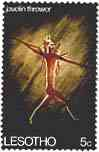
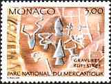
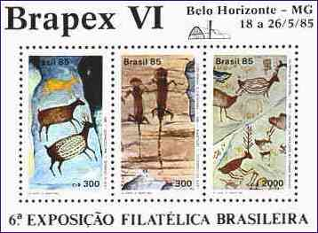
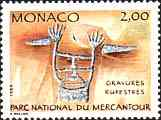
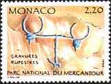
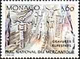
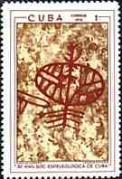
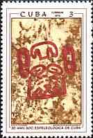
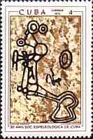
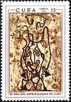

Rock Paintings on Stamps
← Recently Modernized Pages · Art Gallery · Home
 |
 |
 |
Ars longa, vita brevis
- Latin
(Art is long, life is short )
Subjects
Paleolithic art is normally classified as representing animals or humans or as being nonfigurative (taking the form of signs and symbols). Nearly all animals are depicted in profile, most of them adults of a recognizable species; many, however, are incomplete or ambiguous, and a few are imaginary, like the Lascaux "unicorn". Scenes, in which figures are shown interacting, are very hard to identify in
Paleolithic art since it is often impossible to prove a deliberate association between figures as opposed to their simple juxtaposition. Only a very few definite scenes have been identified.
The animals depicted in Paleolithic are overwhelmingly the horse and the bison, although other species (such as mammoth or deer) dominate at particular sites. Carnivores are rare; fish and birds are far more plentiful in portable art than in cave art. Insects and recognizable plants are limited to a few examples in portable art.
Paleolithic art is therefore not an accumulation of observations of nature. It has meaning and structure, with different species predominating in different periods and regions. While hand stencils are relatively common, representations of humans are scarce in cave art but are more frequently depicted in portable art. The best known specimens are the "Venus" figures, small statuettes depicting females of a wide span of ages and types.
Nonfigurative marks are far more abundant than figurative depictions. They include a wide range of motifs, from a single dot or line to complex constructions, and to extensive panels of linear marks. Signs can be totally isolated in a cave, clustered on their own panels, or closely associated with figurative images. The simpler nonfigurative motifs are abundant and widespread. The more complex are extraordinarily variable and are restricted in space and time; they could be ethnic markers, delineating
Paleolithic groups.
 |
 |
 |
 |
 |
The Meaning of Cave Art
Paleolithic cave art was first thought to be purely decorative, with no complex meaning. This view arose from portable art. But knowledge of cave art expanded as further discoveries were made, and it became clear that there is a complex, albeit undeciphered, meaning behind the subject matter of cave art and its location. A restricted range of species is depicted; paintings, drawings, and engravings are frequently found in inaccessible places within caves; there are associations of figures; there are enigmatic signs, purposely incomplete or ambiguous figures, and caves that were decorated but apparently not inhabited.
Early this century, the functional theory of sympathetic magic was applied to
Paleolithic art. According to this theory, the animals were drawn in order to affect real animals in some way. Ritual and magic were seen in every aspect of
Paleolithic art-in the breakage of decorated objects and in representation of animals ritually killed with images of missiles or even physically attacked. In fact, very few
Paleolithic animal figures have missiles on them; missiles also occur on some human figures and many caves have no images of this type at all. There are no clear hunting scenes, animal bones found in many decorated caves bear little relation to the species depicted on the walls, and it is clear that the motivation behind cave art was distinct from the practicalities of a life that produced the faunal remains.
 |
 |
 |
 |
Another popular theory was that of fertility magic, according to which the depiction of the animals was linked to the hope that they would reproduce to provide food in the future. Yet in few instances is the gender of the animals shown, and genitalia are almost always shown discreetly. As for copulation, in the whole of
Paleolithic iconography there are only one or two (very dubious) examples.
Most Paleolithic art is clearly not about hunting or reproduction. In the 1950s two French scholars, Annette Laming-Emperaire and André Leroi-Gourhan, concluded that caves had been decorated systematically rather than in a random fashion. They treated cave art as a carefully laid-out composition within each cave and saw the animals not as portraits but as symbols. They discovered repeated associations: the numerically dominant horses and bovids, concentrated in central panels, were thought to represent a basic duality that was assumed to be sexual. They also divided the signs into male (phallic) and female (vulvar) categories.
Some researchers are currently seeking to establish firm and detailed criteria for identifying the work of individual artists. The gender of
Paleolithic artists is unknown, and it cannot be assumed that the art was created exclusively by and for men. Others are finding a correspondence between the richest panels and good acoustics, suggesting that sound played an important part in whatever ceremonies accompanied the production of cave art.
No single explanation can suffice for the whole of Paleolithic art: it comprises at least two-thirds of known art history, covering 25 millennia and a vast area of the world.
(After Microsoft Encarta 1996)
Background: Masked negroid woman. The period of round-headed men. Probably later as the early Neolithic. Sefar, Eastern Tassili Mountains, Middle Sahara, Algeria.